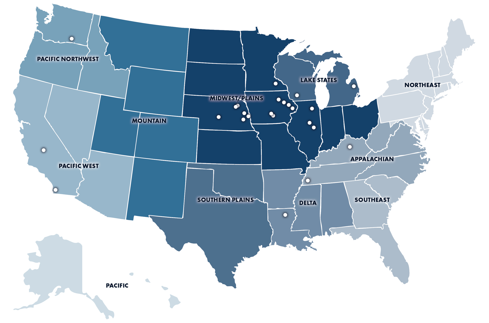

New
New
Corn Belt Region
The Corn Belt is 111.2 million acres of the most efficient, most closely watched farmland in the world: Iowa, Illinois, Indiana, Ohio and Missouri. It is the region with the most sophisticated farm operations in the country, and it has long been the first place capital looks when it wants exposure to agriculture.
Its record is steady income that generally exceeds Treasury returns, appreciation near 6% a year over the long run, and the strongest inflation hedge of any major production region. What is different this year is the spread around that record: policy, trade and government payments now move local markets more than input costs and output prices do.
Peoples Company has worked this region since the company started, and it is where the largest share of our offices, our brokers, our land managers and our appraisers sit.

The region in figures
111.2M
Acres of farmland across Iowa, Illinois, Indiana, Ohio and Missouri
$110–120B
Gross farm receipts annually across the five-state region (USDA, 2025)
30%+
Of total U.S. corn and soybean production from Iowa and Illinois together
~6%
Long-term annual appreciation, with income returns near 3.5%
2025 Market Analysis
The Corn Belt contains approximately 111.2 million acres of farmland across the relatively homogeneous, row-crop–dominated production region of Iowa, Illinois, Indiana, Ohio and Missouri. Iowa and Illinois consistently rank first and second in the value of agricultural output within the region, and all five states rank among the top 13 nationally in agricultural production value, as well as within the top 10 for both corn and soybean production. Iowa leads the nation in corn production, while Illinois leads in soybeans.
Iowa is unique within this group due to its substantial reliance on livestock production, generating nearly $19.5 billion in annual livestock revenue — ranking third nationally behind Texas ($24 billion) and Nebraska ($20 billion). Indiana, Missouri and Ohio each generate approximately $6–7 billion annually from livestock, while Illinois generates roughly $4 billion. Livestock income is of particular importance, as livestock and crop sectors tend to move inversely: lower commodity prices reduce feed costs for livestock operations, and vice versa.
Total returns have exceeded those of publicly traded equity indexes with substantially lower volatility for nearly every possible 10-year holding period since 1990. However, the “thin market” and heterogeneous nature of farmland investments complicate access to the asset class relative to equities. Corn Belt farmland has also served as a strong inflation hedge, with returns exceeding inflation in all but one year since 1990.
Corn Belt Summary
The Corn Belt has long been a target for financial investment in agriculture, and is the region with the most efficient and sophisticated farm operations. The historic financial performance has been remarkable relative to competing investments, but the current uncertainties stemming from recent policy changes have created greater variability in local market conditions than has come from market or weather conditions in the past.
In total, the factors surrounding agricultural production and investment valuation models that created the steady and competitive returns, inflation hedging features and diversification benefits in the Corn Belt appear to remain, and returns are still relatively attractive, but in a widely expanded possibility set. The longer-term prospects remain positive, though shorter-term minor additional pullbacks would not be surprising. The best summary may still be that there will be both opportunities and disappointments as the markets churn back to a longer-run position of greater market certainty.
What the region has actually returned
| Period | 1991–2025 35 years | 2001–2025 25 years | 2011–2025 15 years | 2016–2025 10 years | 2021–2025 5 years | 2022–2025 4 years | 2023–2025 3 years | 2024–2025 2 years | 2025 1 year |
|---|---|---|---|---|---|---|---|---|---|
| Income %/year | 3.95% | 3.36% | 3.07% | 2.90% | 2.80% | 2.75% | 2.70% | 2.66% | 2.55% |
| Capital gain %/year | 5.97% | 6.02% | 6.02% | 2.71% | 6.09% | 7.42% | 7.49% | 5.54% | 4.59% |
| Total return %/year | 9.91% | 9.38% | 9.09% | 5.61% | 8.89% | 10.16% | 10.19% | 8.20% | 7.14% |
| After tax and expenses | 9.40% | 8.94% | 8.57% | 5.37% | 8.60% | 9.84% | 9.84% | 7.87% | 6.86% |
| CPI | 2.54% | 2.54% | 2.50% | 2.95% | 3.90% | 4.42% | 3.79% | 2.99% | 2.86% |
| CMT-10 | 4.13% | 3.32% | 2.91% | 2.65% | 2.96% | 3.37% | 3.85% | 4.15% | 4.29% |
Returns from this region display the highest correlation with inflation over longer holding periods of any major production region, at nearly 75% over ten years, and the lowest drawdown risk. Iowa farmland prices react a little more than Illinois or Indiana in both rising and falling environments, but all three of the I states share very similar patterns, which correspond closely with rental rates as well. Ohio and Missouri have lower productivity on average and more diversified agriculture, with dairy, livestock and recreational ground representing a larger share of the land base.
Source: Peoples Company, 2025 National Land Values, Corn Belt section. Figures are five-state averages and are updated once a year when the report is published.
Price — $/Acre, Corn Belt
Cash Rent — $/Acre, Corn Belt
Real Estate For Sale
New
 Auction
Auction
Auction
Auction
Auction
Auction
Regional Offices
Bloomington, IL
1907 Jumer Drive, Suite DBloomington, IL 61704 800.607.6888
Cascade, IA
300 1st Avenue WCascade, IA 52033 563.543.8338
Champaign, IL
1605 South State Street, Suite 110Champaign, IL 61820 800.607.6888
Cumming, IA
1108 S. 44th Street, Suite 102Cumming, IA 50061 515.222.1347
DeWitt, IA
700 6th AvenueDeWitt, IA 52742 563.659.8185
Fremont, NE
1735 E. Military Avenue, P.O. Box 672Fremont, NE 68026 402.721.5995
Independence, IA
2300 Swan Lake Boulevard, Suite 300Independence, IA 50644 319.361.8089
Indianola, IA
113 W. Salem AvenueIndianola, IA 50125 515.961.0247
Kasson, MN
20 4th Street SEKasson, MN 55944 507.634.7033
Kearney, NE
4111 4th Avenue, Suite 22Kearney, NE 68845 308.237.7662
Lincoln, NE
3501 Plantation Drive, Suite 100Lincoln, NE 68516 402.434.4498
Norfolk, NE
800 W. Benjamin Avenue, Suite BNorfolk, NE 68701 402.371.0065
Omaha, NE
4601 Catalyst Court, Suite 1070Omaha, NE 68106 402.334.0256
Oswego, IL
2681 U.S. Highway 34Oswego, IL 60543 331.999.3490
Wapakoneta, OH
22253 Blank PikeWapakoneta, OH 45895 402.334.0256
Wayne, NE
206 Main Street, P.O. Box 16Wayne, NE 68787 402.833.3132
Regional Team